การฝึกต่อวงจรแบ่งแรงดันบนเบรดบอร์ดร่วมกับบอร์ด Arduino Uno#
บทความนี้กล่าวถึง การฝึกต่อวงจรบนเบรดบอร์ดและใช้งานร่วมกับบอร์ด Arduino แบบเสมือนจริง รวมถึงแนะนำการเขียนโค้ด Arduino Sketch ในเบื้องต้น
Keywords: Circuit Simulation, Arduino Uno, Tinkercad Circuits, Voltage Dividers, Variable Resistors
- การทดลองวงจรแบ่งแรงดันไฟฟ้า (Voltage Divider)
- ตัวอย่างอุปกรณ์ Variable Resistors ที่มีค่าความต้านทานเปลี่ยนแปลงได้
- การอ่านค่าจากวงจรแบ่งแรงดันด้วย Arduino Uno เพื่อปรับอัตราการกระพริบของ LED
- การส่งข้อความออกทางพอร์ต Serial
- การอ่านค่าจากวงจรเซนเซอร์แสง LDR
- การต่อวงจร "วิทสโตนบริดจ์" (Wheatstone Bridge)
▷ การทดลองวงจรแบ่งแรงดันไฟฟ้า (Voltage Divider)#
วงจรแบ่งแรงดันไฟฟ้าประกอบด้วยตัวต้านทานอย่างน้อย 2 ตัว นำมาต่ออนุกรมกัน และมีการป้อนแรงดันไฟฟ้า เช่น จากแหล่งจ่ายแรงดันคงที่ให้กับวงจร (DC Voltage Supply) ถ้าตัวต้านทานตัวใดตัวหนึ่งมีค่าความต้านทานเปลี่ยนแปลงได้ (เช่น ค่าความต้านทานเปลี่ยนแปลงตามสภาพแวดล้อม) ก็จะทำให้แรงดันตกคร่อมที่ตัวต้านทานแต่ละตัวเปลี่ยนแปลงตาม
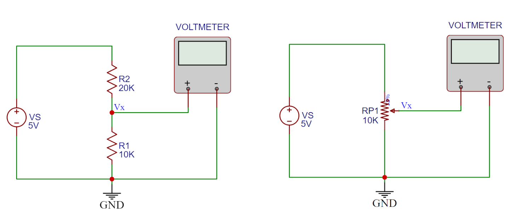
รูป: ตัวอย่างวงจรแบ่งแรงดันไฟฟ้า
ตัวอย่างแรกเริ่มต้นด้วยการนำตัวต้านทานคงที่ 2 ตัว นำมาต่ออนุกรมกัน ดังนั้นเมื่อป้อนแรงดันไฟเลี้ยงให้กับตัวต้านทานที่ต่ออนุกรมกัน จะได้กระแส I ไหลผ่านตัวต้านทานแต่ละตัวในปริมาณที่เท่ากัน ยกตัวอย่างเช่น ป้อนแรงดันคงที่ VS=+5V ให้กับตัวต้านทาน R1 และ R2 ที่ต่ออนุกรมกัน และให้ปลายด้านหนึ่งของ R1 ต่อกับ GND ของวงจร และให้ปลายด้านหนึ่งของ R2 ต่อกับแรงดันไฟเลี้ยง VS ดังนั้นจึงสามารถคำนวณแรงดันตกคร่อมที่ตัวต้านทานแต่ละตัวได้ไม่ยาก
ตัวอย่างการต่อวงจรทดลองสำหรับ Tinkercad Circuits มีดังนี้
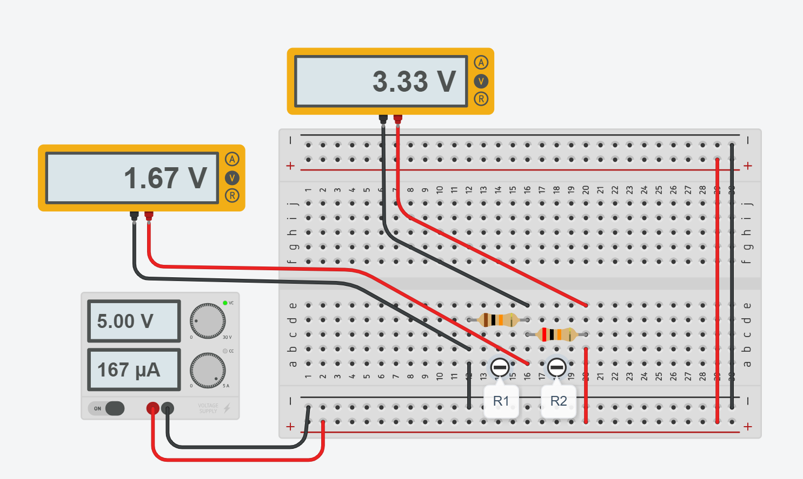
รูป: การวัดแรงดันตกคร่อมของวงจรแบ่งแรงดันที่ประกอบด้วย และ โอห์ม
วงจรประกอบด้วยตัวต้านทาน และ โอห์ม มีแหล่งจ่าย ดังนั้นแรงดันตกคร่อมที่ตัวต้านทานแต่ละตัว จะได้เท่ากับ
ถัดไปเป็นตัวอย่างการทดลองใช้ตัวต้านทานปรับค่าได้แบบ 3 ขา หรือ Potentiometer และนำมาสร้างเป็นวงจรแบ่งแรงดันไฟฟ้า ดังต่อไปนี้
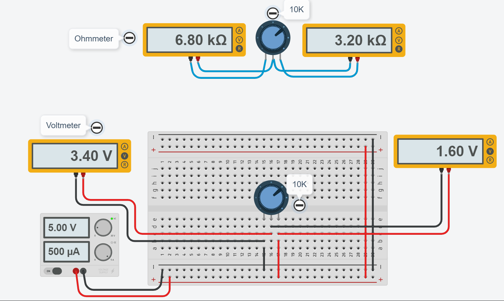
รูป: การวัดค่าความต้านทานของตัวต้านทานปรับค่าได้ 10k โอห์ม และการวัดแรงดันตกคร่อมของวงจรแบ่งแรงดัน
เมื่อจำลองการทำงานและลองปรับตำแหน่งของตัวต้านทานปรับค่าได้ จะทำให้แรงดันตกคร่อมที่ตัวต้านทาน R1 และ R2 เปลี่ยนแปลงได้ แต่ผลรวมจะเท่ากับแรงดันของแหล่งจ่าย
จากตำแหน่งของตัวต้านทานแบบหมุนปรับค่าได้ในรูปตัวอย่าง หากวัดด้วยโอห์มมิเตอร์จะได้ค่าความต้านทาน 6.8k และ 3.2k โอห์ม และได้ผลรวมเท่ากับ 10k โอห์ม ดังนั้นกรณีนี้ และ โอห์ม และวัดได้แรงดันตกคร่อมได้ดังนี้
หากลองปรับหมุนปุ่มของตัวต้านทานปรับค่าได้จากตำแหน่งมุมซ้ายสุดไปขวาสุด และวัดแรงดันไฟฟ้าที่ได้ จะเห็นได้ว่า ค่าที่วัดได้จะเป็นค่าต่อเนื่องในช่วง 0V .. +5V ดังนั้นจึงมองว่า เอาต์พุตของวงจรแบ่งแรงดันไฟฟ้าในลักษณะนี้ เป็นสัญญาณแบบแอนะล็อก
▷ ตัวอย่างอุปกรณ์ Variable Resistors ที่มีค่าความต้านทานเปลี่ยนแปลงได้#
ในการใช้งานซอฟต์แวร์ AUTODESK Tinkercad Circuits นอกจากตัวต้านทานคงที่ และ ตัวต้านทานปรับค่าได้ ยังมีตัวต้านทานประเภทอื่นที่มีค่าความต้านทานเปลี่ยนแปลงตามสภาพแวดล้อมให้เลือกใช้งานได้ เช่น
- ตัวต้านทานไวแสง (LDR: Light-Dependent Resistor) หรือเรียกว่า Photocell ที่มีค่าความต้านทานเปลี่ยนแปลงตามความเข้มแสง (Illuminance: Lux) เช่น ทำจากวัสดุ CdS (Cadmium Sulfide) หรือ CdSe (Cadmium Selenide) ซึ่งตอบสนองได้ดีในช่วงความยาวคลื่นของแสงที่มองเห็นได้ด้วยตาเปล่า
- เทอร์มิสเตอร์ (Thermistor) เป็นวัสดุที่มีค่าความต้านเปลี่ยนแปลงตามอุณหภูมิ โดยจำแนกออกเป็นสองประเภทหลักคือ เทอร์มิสเตอร์ที่มีค่าสัมประสิทธิ์อุณหภูมิเป็นบวก (Positive Temperature Coefficient: PTC) ซึ่งให้ค่าความต้านทานเพิ่มขึ้นเมื่ออุณหภูมิเพิ่มขึ้น และเทอร์มิสเตอร์ที่มีค่าสัมประสิทธิ์อุณหภูมิเป็นลบ ซึ่งให้ค่าความต้านทานลดลงเมื่ออุณหภูมิเพิ่มขึ้น (Negative Temperature Coefficient: NTC)
- ตัวต้านทานที่เปลี่ยนค่าเมื่อได้รับแรงกด ซึ่งเป็นใช้เซนเซอร์ตรวจจับแรงกด (Resistive Force Sensor) เมื่อได้รับแรงกระทำ จะทำให้ค่าความต้านทานเปลี่ยนแปลงได้
- ตัวต้านทานที่เปลี่ยนค่าเมื่อเกิดการโค้งงอ (Flexible Potentiometer) ซึ่งใช้เป็นเซนเซอร์ตรวจจับการโค้งงอ (Resistive Flex Sensor) เมื่อทำเกิดความโค้งงอ จะทำให้ค่าความต้านทานเปลี่ยนแปลงได้
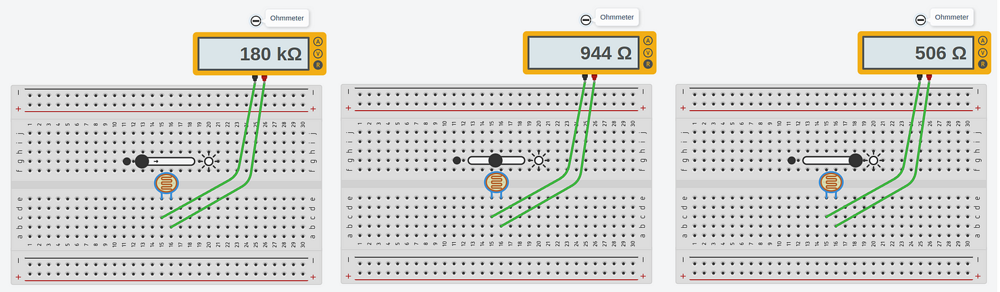
รูป: ตัวต้านทานไวแสง หรือ LDR (แอลดีอาร์)
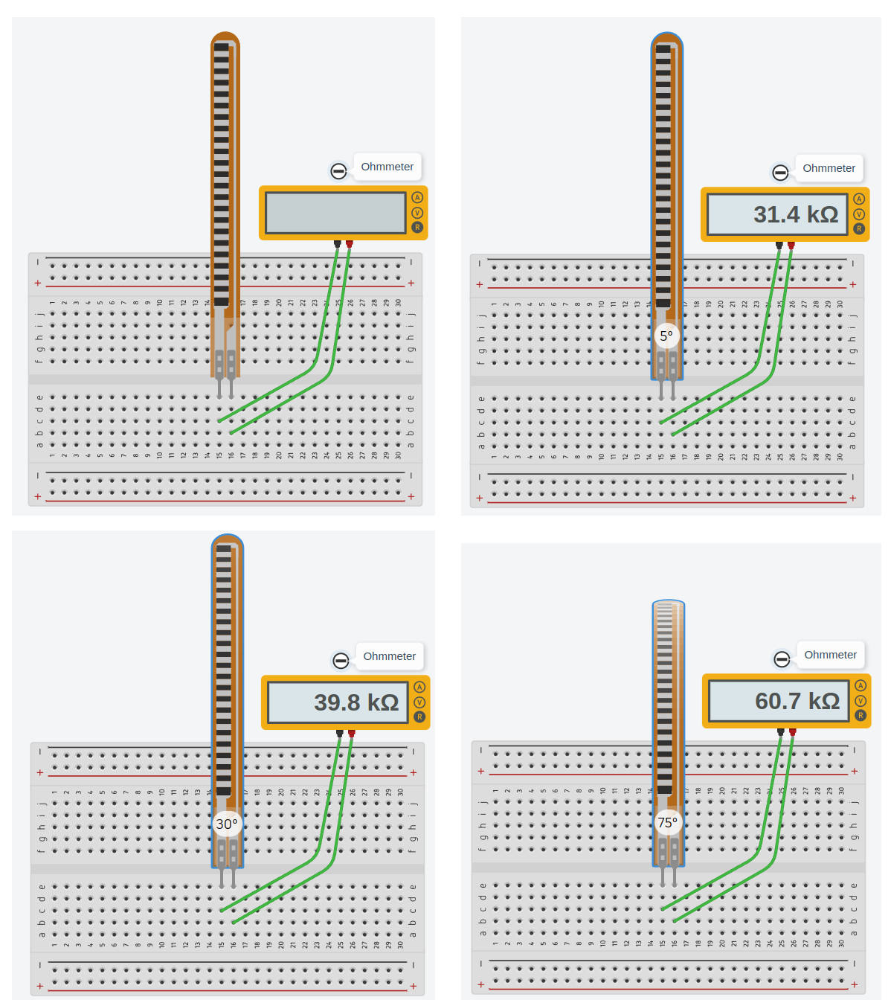
รูป: ตัวต้านทานที่เปลี่ยนค่าเมื่อเกิดการโค้งงอ
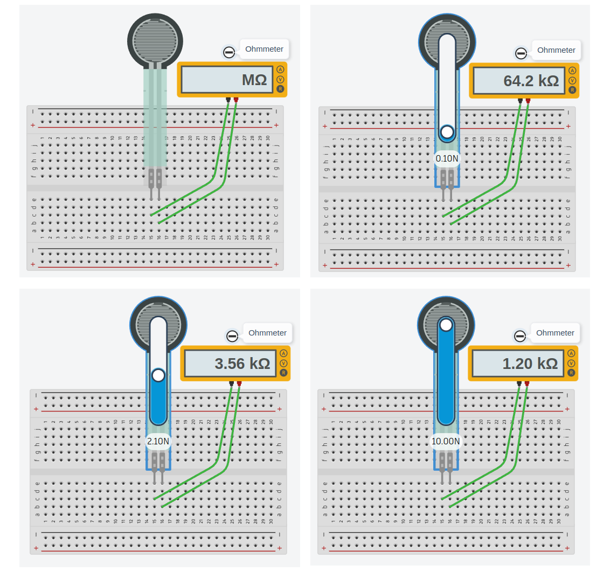
รูป: ตัวต้านทานที่เปลี่ยนค่าเมื่อได้รับแรงกด
โดยทั่วไปแล้ว ตัวต้านทานปรับค่าได้จะถูกนำไปใช้ร่วมกับตัวต้านทานคงที่และใช้งานเป็นวงจรแบ่งแรงดันไฟฟ้า
▷ การอ่านค่าจากวงจรแบ่งแรงดันด้วย Arduino Uno เพื่อปรับอัตราการกระพริบของ LED#
ถัดไปเป็นตัวอย่างการเขียนโค้ด Arduino Sketch และจำลองการทำงานด้วย Tinkercad Circuits วงจรนี้ประกอบด้วยตัวต้านทานปรับค่าได้ซึ่งมี 3 ขา ป้อนแรงดันไฟเลี้ยงที่ขา 1 และ 2 (ขาคู่ที่อยู่ด้านข้าง) ส่วนขาตรงกลาง (ตรงกับ Wiper หรือ Sliding Contact ที่อยู่ภายใน) ใช้เป็นขาเอาต์พุตของวงจร แรงดันไฟฟ้าที่ขากลางเทียบกับ GND ของวงจรนี้ จะถูกนำไปใช้เป็นสัญญาณอินพุต-แอนะล็อก ซึ่งมีค่าอยู่ในช่วง 0V .. +5V สำหรับบอร์ด Arduino Uno
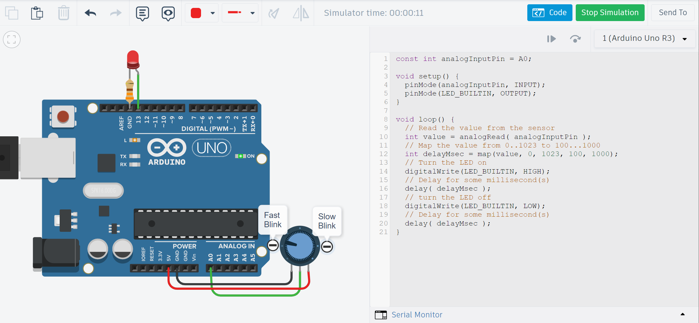
รูป: การใช้งานวงจรแบ่งแรงดันไฟฟ้าร่วมกับบอร์ด Arduino Uno และตัวอย่างการเขียนโค้ด
สัญญาณอินพุตแบบแอนะล็อกถูกนำไปต่อเข้าที่ขา A0 ของบอร์ด Arduino Uno และสามารถอ่านค่าให้เป็นข้อมูลดิจิทัล (เป็นค่าตัวเลขจำนวนเต็ม) โดยใช้วงจร ADC (Analog-to-Digital Converter) ภายในชิปไมโครคอนโทรลเลอร์ของบอร์ด Uno
วงจรประเภทนี้ทำหน้าที่คอยแปลงระดับแรงดันที่ขาอินพุต ให้เป็นค่าตัวเลข ซึ่งในกรณีของบอร์ด Uno จะได้ค่าอยู่ในช่วง 0..1023 (ความละเอียดเท่ากับ 10 บิต) สำหรับแรงดันอินพุตในช่วง 0V .. +5V (ใช้สเกลแบบเชิงเส้นในการแปลงค่าตัวเลข)
คำสั่งของ Arduino API ที่จะต้องใช้กับสัญญาณอินพุต-แอนะล็อกคือ
analogRead(...)
โดยจะต้องระบุหมายเลขขาที่ใช้เป็นขาอินพุต-แอนะล็อก เช่น A0 ในตัวอย่างนี้
// Constant declaration
const int analogInputPin = A0; // The analog input pin to be used.
void setup() {
// Set LED pin direction to output
pinMode( LED_BUILTIN, OUTPUT );
}
void loop() {
// Read the value from the sensor
int value = analogRead( analogInputPin );
// Map the value from 0..1023 to 100...1000
int delayMsec = map( value, 0, 1023, 100, 1000 );
// Turn the LED on
digitalWrite( LED_BUILTIN, HIGH );
// Delay for some milliseconds
delay( delayMsec );
// turn the LED off
digitalWrite( LED_BUILTIN, LOW );
// Delay for some milliseconds
delay( delayMsec );
}
ในโค้ดตัวอย่างมีการใช้คำสั่ง map(...)
ของ Arduino API เพื่อแปลงค่าตัวเลขในช่วง 0..1023 โดยการสเกลค่าแบบเชิงเส้น ให้อยู่ในช่วง 100 ถึง 1000
แล้วนำไปใช้เป็นค่าในการหน่วงเวลาด้วยคำสั่ง delay(...) ดังนั้นการหมุนปรับค่าของตัวต้านทาน
จะทำให้อัตราการกระพริบของ LED บนบอร์ด Uno เพิ่มขึ้นหรือลดลงได้
การเรียกใช้ฟังก์ชัน map(...)
map(value, fromLow, fromHigh, toLow, toHigh)
ให้ผลเหมือนกับการเขียนโค้ดต่อไปนี้
(value - fromLow) * (toHigh - toLow) / (fromHigh - fromLow) + toLow
▷ การส่งข้อความออกทางพอร์ต Serial#
จากวงจรและโค้ดตัวอย่างที่แล้ว หากต้องการจะส่งค่าของตัวแปรในขณะที่โปรแกรมทำงาน โดยส่งเป็นข้อความออกทางพอร์ตอนุกรม Serial ไปยังคอมพิวเตอร์ของผู้ใช้ ก็สามารถใช้คำสั่งของ Arduino API เช่น
- Serial.begin(...) ทำคำสั่งนี้เป็นการเริ่มต้นการทำงานของพอร์ต Serial และจะต้องระบุอัตราการรับส่งข้อมูล ซึ่งเรียกว่า Baudrate โดยทั่วไปก็ใช้ค่าคงที่ เช่น 9600 (ช้า) หรือ 115200 (เร็ว) เป็นต้น
Serial.print(...)ส่งค่าของตัวแปร หรือค่าคงที่ โดยแปลงเป็นข้อความไปยัง Serial ส่งข้อความแล้วไม่ต้องขึ้นบรรทัดใหม่Serial.println(...)ส่งข้อความแล้วขึ้นบรรทัดใหม่
// Constant declaration
const int analogInputPin = A0; // Use Arduino A0 pin (analog input)
void setup() {
// Initialize Serial and set the baudrate to 115200
Serial.begin( 115200 );
// Set LED pin direction to output
pinMode( LED_BUILTIN, OUTPUT );
}
void loop() {
// Read the value from the sensor
int value = analogRead( analogInputPin );
int delayMsec = map( value, 0, 1023, 100, 1000 );
Serial.print( "A0:" );
Serial.print( value );
Serial.print( ", delay(msec):" );
Serial.println( delayMsec );
// Turn the LED on
digitalWrite( LED_BUILTIN, HIGH );
// Delay for some milliseconds
delay( delayMsec );
// turn the LED off
digitalWrite( LED_BUILTIN, LOW );
// Delay for some milliseconds
delay( delayMsec );
}
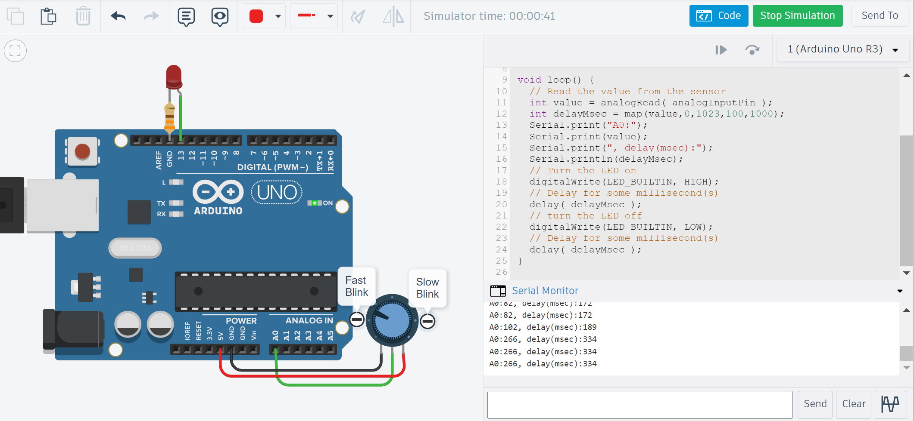
รูป: ตัวอย่างการจำลองการทำงานของบอร์ด Uno แบบเสมือนจริง และมีการส่งข้อความออกทางพอร์ต Serial
▷ การอ่านค่าจากวงจรเซนเซอร์แสง LDR#
ตัวอย่างถัดไปสาธิตการต่อวงจรแบ่งแรงดันไฟฟ้าโดยใช้ตัวต้านทานไวแสง LDR และตัวต้านทานคงที่ เช่น 2.2k แรงดันไฟฟ้าจากวงจรดังกล่าวจะถูกนำไปใช้เป็นสัญญาณอินพุต-แอนะล็อกให้กับบอร์ด Uno โดยต่อเข้าที่ขา A0
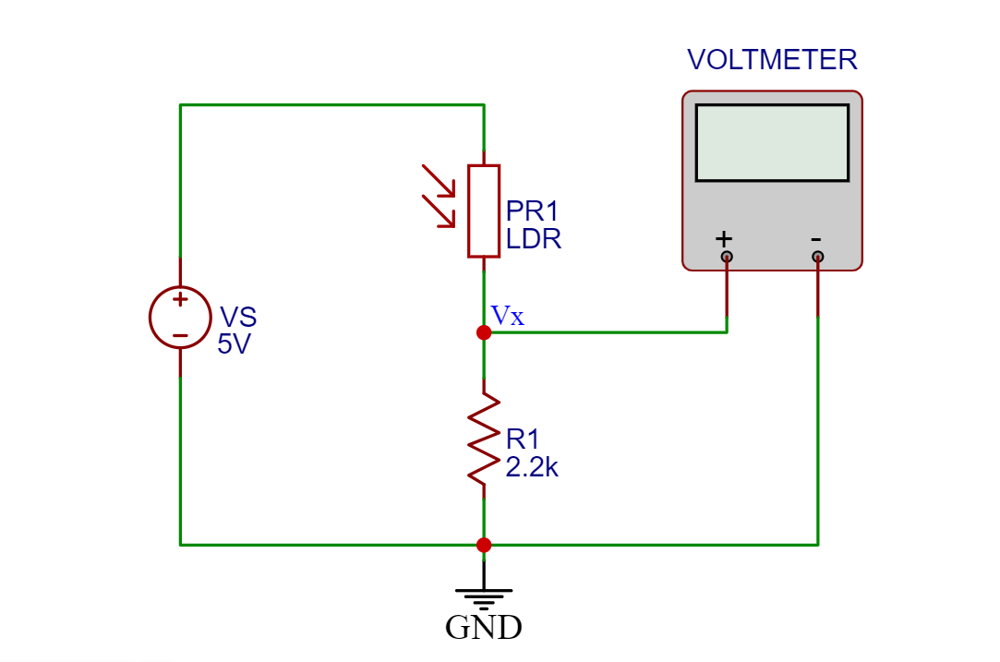
รูป: ตัวอย่างผังวงจรแบ่งแรงดันไฟฟ้าที่ประกอบด้วย LDR และตัวต้านทานคงที่ และการวัดแรงดันตกคร่อมที่ตัวต้านทาน
ค่าของสัญญาณอินพุต-แอนะล็อกที่ได้จากการอ่านด้วยคำสั่ง analogRead(...) จะถูกเก็บไว้ในตัวแปร
sensorValue แล้วนำไปเปรียบเทียบกับค่าคงที่ triggerValue ผลลัพธ์จากการเปรียบเทียบค่า
จะถูกใช้เป็นเงื่อนไขของประโยคคำสั่ง if และกำหนดสถานะลอจิกของ LED ที่ขาดิจิทัลหมายเลข 5
ในตัวอย่างนี้ได้กำหนดเงื่อนไขไว้ว่า ถ้าความสว่างหรือความเข้มแสงเพิ่มขึ้น และทำให้แรงดันอินพุตเพิ่มขึ้นตาม จนมีค่ามากกว่า triggerValue
จะทำให้ LED เปลี่ยนสถานะลอจิกจาก HIGH เป็น LOW
ดังนั้นถ้าความเข้มแสงมากพอ จะทำให้ LED ดับลง แต่ถ้าน้อยกว่าค่าที่กำหนดไว้ จะทำให้ LED สว่าง
// Constant declarations
const int sensorInputPin = A0; // Analog input pin
const int ledPin = 9; // External LED pin
const int triggerValue = 700; // Trigger value for comparison
void setup() {
// Initialize Serial and set the baudrate to 115200
Serial.begin( 115200 );
// Set LED pin direction to output
pinMode( ledPin, OUTPUT );
}
void loop() {
// Read the analog input
int sensorValue = analogRead( sensorInputPin );
// Compare the current analog input value with
// the trigger value and update the LED output
if (sensorValue > triggerValue) {
digitalWrite( ledPin, LOW ); // Turn off the LED
} else {
digitalWrite( ledPin, HIGH ); // Turn on the LED
}
// Send the analog sensor value as a string to Serial
Serial.println( sensorValue );
delay(50);
}
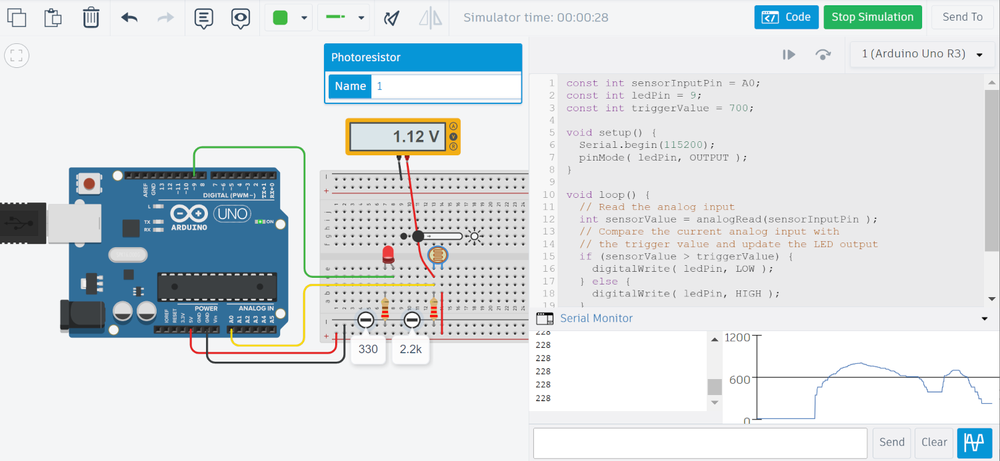
รูป: ตัวอย่างการจำลองการทำงานของบอร์ด Uno แบบเสมือนจริง สำหรับวงจรเซนเซอร์ LDR(มีการปรับความเข้มแสง)
ค่าของ triggerValue เป็นค่าคงที่ แต่ถ้าต้องการให้ปรับระดับได้จากภายนอก ก็สามารถใช้วงจรแบ่งแรงดันไฟฟ้า
และสร้างจากตัวต้านทานปรับค่าได้ และอ่านค่าด้วยขาแอนะล็อก-อินพุตอีกขาหนึ่ง เช่น A0 แล้วนำค่าไปใช้ในการเปรียบเทียบ
ตัวอย่างการเขียนโค้ด มีดังนี้
// Constant declaration
const int sensorInputPin = A0;
const int triggerInputPin = A1;
const int ledPin = 9;
void setup() {
Serial.begin( 115200 );
pinMode( ledPin, OUTPUT );
}
void loop() {
int sensorValue = analogRead( sensorInputPin );
int triggerValue = analogRead( triggerInputPin );
// Check the condition for turning off/on the LED
if (sensorValue > triggerValue) {
digitalWrite( ledPin, LOW ); // Turn off the LED
} else {
digitalWrite( ledPin, HIGH ); // Turn on the LED
}
// Send the analog value as a string to Serial
Serial.println( sensorValue );
delay(50);
}
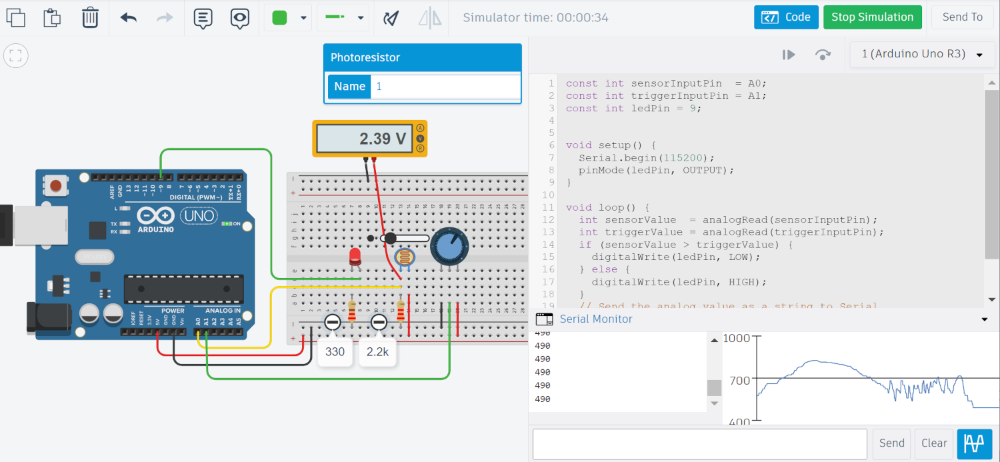
รูป: ตัวอย่างการจำลองการทำงานของบอร์ด Uno แบบเสมือนจริง สำหรับวงจรเซนเซอร์ LDR (มีการปรับความเข้มแสง)
หากนำโค้ดตัวอย่างไปทดลองใช้จริง ระดับแรงดันของสัญญาณอินพุต อาจมีการแกว่งหรือเปลี่ยนแปลงในช่วงแคบ ๆ
และถ้าหากใกล้เคียงกับค่า triggerValue ที่ได้กำหนดไว้ จะทำให้ LED ติด-ดับ สลับไปมา
ในช่วงเวลาสั้น ๆ การแก้ไขปัญหาในลักษณะนี้ทำได้หลายวิธี
แนะนำให้มีการใช้ค่าคงที่สำหรับการเปรียบเทียบสอง 2 ระดับ
คือ ค่าระดับบน (upperValue) และค่าระดับล่าง (lowerValue)
และมีการเปรียบเทียบกับค่าล่าสุด (currentValue) กับค่าที่อ่านได้ในครั้งที่แล้ว (previousValue)
เพื่อให้ทราบทิศทางการเปลี่ยนแปลง (เพิ่มขึ้นหรือลดลง)
- ถ้าแรงดันอินพุตที่วัดได้เพิ่มขึ้นและสูงกว่าค่าระดับบน ให้ผลลัพธ์เป็น "ความเข้มแสงมาก" แล้วปิด LED
- ถ้าแรงดันอินพุตเริ่มลดลงจนต่ำกว่าค่าระดับล่าง ให้ผลลัพธ์เป็น "ความเข้มแสงน้อย" แล้วเปิด LED
การตรวจสอบเงื่อนไขสำหรับการปิด LED:
if ( (currentValue > previousValue)
&& (currentValue > upperValue) ) {
digitalWrite(ledPin, LOW); // Turn off LED
}
คำอธิบายโค้ด
- มีการใช้ประโยคคำสั่ง
ifตรวจสอบเงื่อนไขเพื่อทำให้ LED ดับลง (OFF) - มีการเปรียบเทียบค่า
(currentValue > previousValue)ถ้าให้ผลเป็นจริง ค่าใหม่มีค่ามากกว่าค่าครั้งก่อน หมายถึง มีการเปลี่ยนแปลงค่าเพิ่มขึ้น - มีการเปรียบเทียบค่า
(currentValue > upperValue)ถ้าให้ผลเป็นจริง ค่าใหม่มีค่ามากกว่าค่าระดับบนแล้ว &&หมายถึง โอเปอร์เรเตอร์ Logical AND ดังนั้นถ้าทั้งสองเงื่อนไขเป็นจริง จะทำให้ LED ดับลง
การตรวจสอบเงื่อนไขสำหรับการเปิด LED:
if ( (currentValue < previousValue)
&& (currentValue < lowerValue) ) {
digitalWrite(ledPin, HIGH);
}
คำอธิบายโค้ด
- มีการใช้ประโยคคำสั่ง
ifตรวจสอบเงื่อนไขเพื่อทำให้ LED สว่าง (ON) - มีการเปรียบเทียบค่า
(currentValue < previousValue)ถ้าให้ผลเป็นจริง ค่าใหม่มีค่าน้อยกว่าค่าครั้งก่อน หมายถึง มีการเปลี่ยนแปลงค่าลดลง - มีการเปรียบเทียบค่า
(currentValue < lowerValue)ถ้าให้ผลเป็นจริง ค่าใหม่มีค่าน้อยกว่าค่าระดับล่างแล้ว &&หมายถึง โอเปอร์เรเตอร์ Logical AND ดังนั้นถ้าทั้งสองเงื่อนไขเป็นจริง จะทำให้ LED สว่าง
ตัวอย่างโค้ดโดยสมบรูณ์:
// Constant declaration
const int analogInputPin = A0;
const int ledPin = 9;
const int lowerValue = 500;
const int upperValue = 700;
// Global variable declaration
int previousValue;
void setup() {
Serial.begin( 115200 );
pinMode( ledPin, OUTPUT );
previousValue = analogRead( analogInputPin );
delay(100);
}
void loop() {
// Read the analog input
int currentValue = analogRead( analogInputPin );
// Check the condition for turning off the LED
if ( (currentValue > previousValue)
&& (currentValue > upperValue) ) {
digitalWrite(ledPin, LOW); // Turn off the LED
}
// Check the condition for turning on the LED
if ( (currentValue < previousValue)
&& (currentValue < lowerValue) ) {
digitalWrite(ledPin, HIGH); // Turn on the LED
}
// Save the current value as previous value
previousValue = currentValue;
// Send the analog value as a string to Serial
Serial.println( currentValue );
delay(50);
}
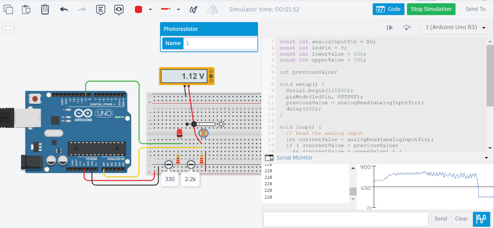
รูป: ตัวอย่างการจำลองการทำงานของบอร์ด Uno แบบเสมือนจริง สำหรับวงจรเซนเซอร์ LDR (มีการปรับความเข้มแสง)
▷ การต่อวงจร "วิทสโตนบริดจ์" (Wheatstone Bridge)#
วงจร "วิทสโตนบริดจ์" เป็นวงจรไฟฟ้าที่ประกอบด้วยแหล่งจ่ายกระแสตรง และตัวต้านทาน 4 ตัว (, .., ) ตามรูปวงจรต่อไปนี้ วงจรแบ่งได้เป็น 2 ส่วน คือ วงจรแบ่งแรงดันไฟฟ้าจำนวน 2 ชุด (ตัวต้านทาน อนุกรมกับ และ ตัวต้านทาน อนุกรมกับ ตามลำดับ)
- ตัวต้านทาน และ มีค่าคงที่ (Fixed Resistors)
- ตัวต้านทานหนึ่งตัวปรับค่าได้คือ (Variable Resistor)
- ตัวต้านทาน (ใช้ชื่อเป็น ) เป็นตัวต้านทานที่ไม่ทราบค่า (Unknown Resistor) เช่น ตัวต้านทานไวแสง (LDR) ตัวต้านทานเปลี่ยนแปลงค่าตามอุณหภูมิ หรือ เทอร์มิสเตอร์ เป็นต้น
ข้อสังเกต: บางกรณี ก็ให้ เป็นตัวต้านทานปรับค่าได้ และตัวต้านทาน มีค่าคงที่
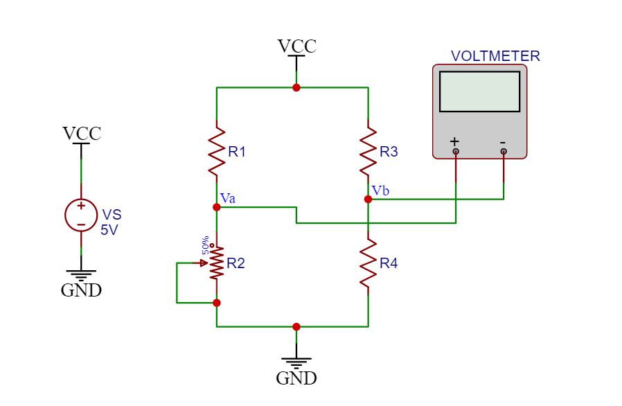
ของวงจรแบ่งแรงดันไฟฟ้าทางซ้ายมือ คำนวณได้ดังนี้
ของวงจรแบ่งแรงดันไฟฟ้าทางขวา คำนวณได้ดังนี้
ดังนั้นผลต่างของแรงดันไฟฟ้าที่จุด A และ B หรือ ในวงจร จะเท่ากับ
และหาค่าของ ได้ดังนี้
จะเป็นศูนย์หรือไม่ ขึ้นอยู่กับว่า วงจรอยู่ในสภาวะสมดุล (Balanced) หรือไม่ การปรับค่า สามารถทำให้วงจรเข้าสู่สภาวะสมดุลได้
ในสภาวะสมดุล ถ้าวัดปริมาณกระแสไหลระหว่างจุด A และ B จะได้เป็นศูนย์ (ไม่มีกระแสไหล) นอกจากนั้นแล้ว ยังสามารถเขียนความสัมพันธ์ระหว่างตัวต้านทานดังนี้
ดังนั้นเมื่อทราบค่าความต้านทานของ , และ ก็สามารถคำนวณค่าของ หรือ ได้
ในแนวทางการทดลองวงจร "วิทสโตนบริดจ์" ร่วมกับบอร์ด Arduino Uno ในเบื้องต้น มีดังนี้
- ต่อวงจร "วิทสโตนบริดจ์" และใช้ LDR เป็นตัวต้านทาน
- เลือกค่า , และ ให้เท่ากัน เช่น เลือกค่า โอห์ม
- ใช้แรงดันไฟเลี้ยง เท่ากับ VCC=+5V จากบอร์ด Uno และต่อ GND ร่วมกัน
- เชื่อมต่อจุด และ ในวงจร "วิทสโตนบริดจ์" ไปยังขาอินพุต-แอนะล็อก A0 และ A1 ของบอร์ด Uno ตามลำดับ
- เขียนโค้ด Arduino Sketch เพื่อวัดค่าแรงดันอินพุต A0 และ A1 แล้วหาผลต่างแรงดันไฟฟ้าที่ได้สำหรับ
- คำนวณค่าความต้านทาน ของ LDR จากค่า และแสดงผลเป็นข้อความเอาต์พุต
- ทดลองเปลี่ยนความเข้มแสงที่ LDR ได้รับ (เช่น เปลี่ยนระยะห่างจากหลอดไฟ) แล้วบันทึกผลการวัดค่าตัวต้านทาน
▷ กล่าวสรุป#
บทความนี้นำเสนอการทดลองวงจรที่มีการใช้งานตัวต้านทานปรับค่าได้ โดยสร้างเป็นวงจรแบ่งแรงดันไฟฟ้า และใช้งานร่วมกับบอร์ด Arduino Uno วงจรและโค้ดสามารถจำลองการทำงานได้เสมือนจริงโดยใช้ซอฟต์แวร์ AUTODESK Tinkercad Circuits
This work is licensed under a Creative Commons Attribution-ShareAlike 4.0 International License.
Created: 2023-12-16 | Last Updated: 2023-12-18